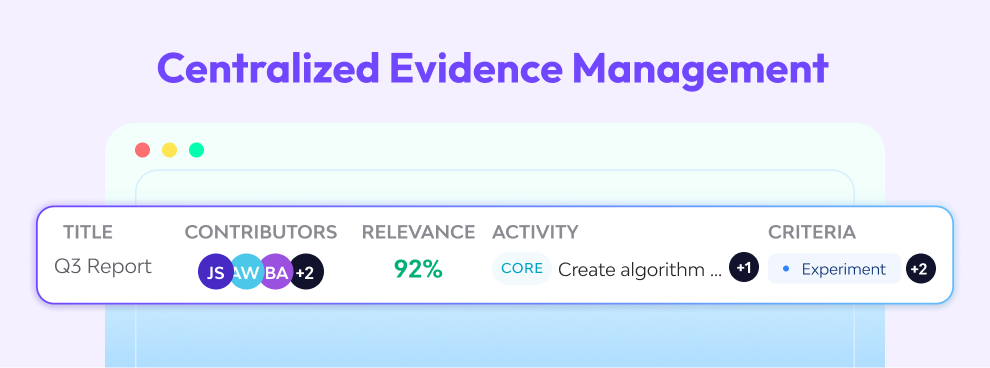
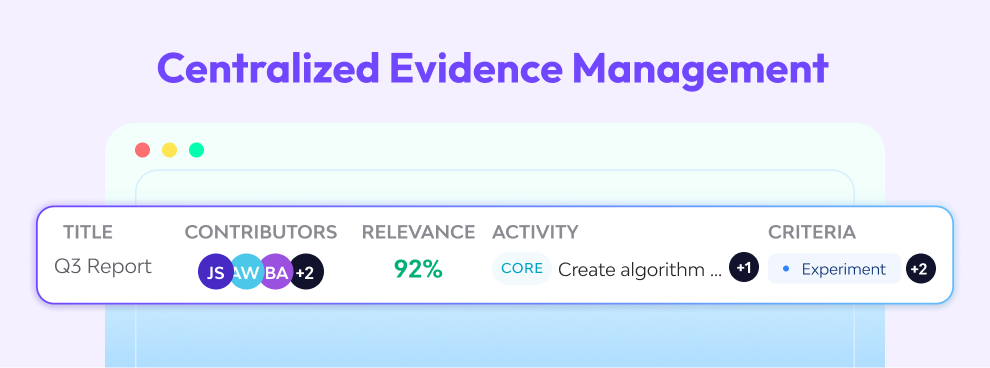

2025 / Case Study
Evidence AI Module
- UI & UX Design
- UX Research
- AI-Driven UX
- Stakeholder Engagement
- Cross-Functional Collaboration
- Multi-Role Design
The Synnch Evidence AI Module is a smart, central hub for uploading and managing R&D claim files like reports, invoices, and notes.
Powered by AI, it analyzes and scores each file’s relevance against R&D tax criteria — matching them to the appropriate project and activity.
This streamlines compliance, saves time, and gives users greater confidence in the accuracy of their evidence.
TLDR; Long Story Short
I designed the Evidence AI Module for Synnch—a smart system that uses AI to automatically score and match R&D claim documents to the right projects.
Key Features
Automatically analyzes and scores uploaded documents based on R&D tax criteria, matching them to the correct project and activity.
Centralizes evidence management.
Reduces manual review, and gives users clear visibility into the strength of their files.
Impact
Replaced slow, manual review processes which gives both consultants and claimants more control and clarity.
Key Takeaway
I learned to design AI-driven experiences that prioritize transparency and user trust.
Balancing AI strengths with its unpredictability pushed me to create flexible UI patterns, especially for handling inconsistencies and duplicates.
Design Process
The Problem
Manually reviewing thousands of files is slow, expensive, and subjective. Consultants were overwhelmed, while claimants lacked visibility into how strong their evidence really was. Managing and organizing all this data through disconnected tools only added to the pain.
Research
How it works
The Evidence module parses uploaded files and uses a custom OpenAI LLM to evaluate their relevance to project activities against 9 eligibility criteria.
A relevance percentage is calculated to help consultants and claimants assess claims faster, eliminate manual review, and save time.
Defining Roles and Users
Help Claimants prepare and lodge their R&D Tax Incentive Claims to the Australian government.
Oversee R&D efforts to secure funding, ensure team compliance, and maintain visibility across activities and contributions.

Staff members perform eligible R&D work and log their hours, forming the core evidence that supports their company’s R&D tax incentive claims.
Identified Key Insights
Consultants needed speed: Fast uploads, bulk actions, and reliable AI assessments.
Claimants needed transparency: Simple, clear explanations of AI scores and how they were calculated.
AI needed simplification: Showing complex criteria breakdowns had to be digestible.
Data challenges were real:Duplicate files, mixed sources, and unclear processing states needed clear UI handling.
Consistency mattered: Aligning with Synnch’s design system would make the module feel like a natural extension of the platform.
UI Sketches


Initial Designs
The initial design has more tabs, more steps - which means more friction for users. We simplified the Evidence AI flow by removing the file repository step.— files are now uploaded and evaluated automatically within the project context.
Design Execution
Simplified File Uploading
The original multi-step upload process was overly complex and misaligned with the tool’s core purpose—quickly determining a file’s relevance to R&D criteria. Users just wanted a simple way to check if their files were eligible.
We streamlined the flow: users can now drag and drop files directly into the table. Files are automatically uploaded and instantly processed by the AI, returning a relevance score and eligibility breakdown.
By removing unnecessary steps, we reduced friction and highlighted the module’s core value—fast, AI-powered document evaluation. This approach keeps the user focused, speeds up decision-making, and reinforces Evidence AI as a purpose-built tool, not a document manager.

Human-AI Interfaces
Even with current AI technological progress, users still face friction—slow processing, unclear system feedback, and inconsistent results from identical inputs. This creates confusion and reduces trust in the tool.
We introduced visual indicators for each stage of the file processing journey (uploading, in-progress, complete, failed), added clear messages confirming success or failure, and created a Side Panel that stores processing history and AI decisions—giving users context and the option to revert to past outputs.
Transparent communication helps set expectations, reduce frustration, and build user confidence in the system. By turning AI limitations into understandable feedback, we create a more trustworthy and enjoyable experience—encouraging continued use and long-term adoption.
Table Layout and Information Display
The Evidence AI Module needs to present a large amount of data—file names, relevance scores, project associations, and AI feedback. With so many columns and variables, the challenge was making it easy for users to identify what matters, quickly distinguish files by project, and take action without feeling overwhelmed.
We streamlined the table to display only the most essential information at a glance—AI evaluation results, file status, and associated project. Visual cues and simplified columns guide users, while bulk selection enables efficient multi-file actions.
Collapsable side panel reveals detailed information about each file, including AI process history, decision reasoning, and the ability to revert to previous results. This allows users to explore context and regain control—all while staying within the same screen.
The table serves as the central workspace for uploading, reviewing, and acting on files. By balancing clarity and functionality, we created a multi-purpose interface that supports user efficiency and mirrors familiar patterns from other SaaS tools—reducing the learning curve while maintaining powerful control.

Learnings and Reflections
Designing the Evidence AI Module as the sole designer of the team taught me how to create AI-driven experiences that balance automation with clarity.
I learned that transparency is essential—users must understand what the AI did and why.
Supporting AI’s strengths while accounting for its unpredictability required thoughtful, flexible UI design, especially around inconsistencies and duplicates.
Collaborating closely with AI engineers also helped me bridge the gap between complex logic and intuitive user experience.